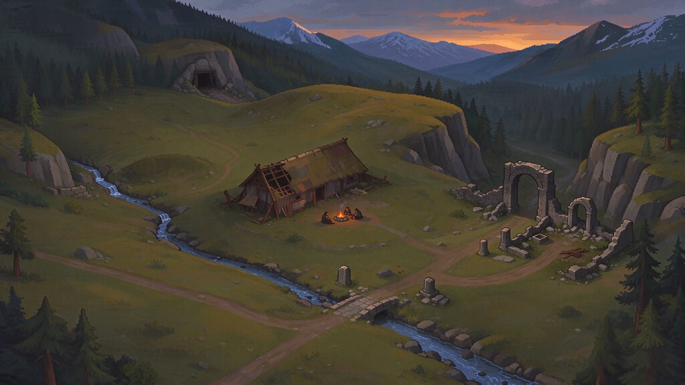
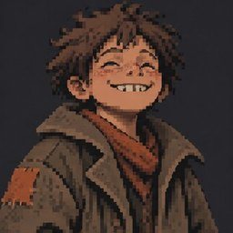

Hollow Ash
The known world
Your place in camp
Since you arrived

Pip keeps a tally of every step you take, even the ones outside a task. Read today's steps from your phone's Health or Fit app and log them. Every 1,000 counts as a camp chore done and adds one to whichever store is lowest.
The people of Hollow Ash
Stores
What the camp is building
You know things nobody here does. Pitch one to a villager whose trust in you is 3 or more. If they believe it can be made with what the camp has, it becomes something to build. Nothing exists here until it is made here.
Journal
The key is kept only in this browser and is sent only to Anthropic when a villager speaks. Set a monthly spend limit on the account that owns it.
Your home location and progress are saved only in this browser on this phone. Destinations come from OpenStreetMap contributors and are not checked by anyone. Use your own judgment about where it is safe and allowed to walk, and skip any place that isn't.